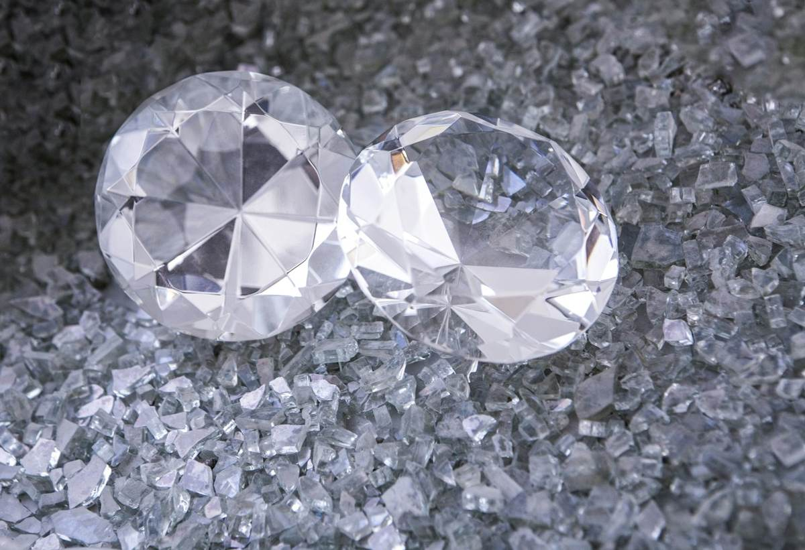
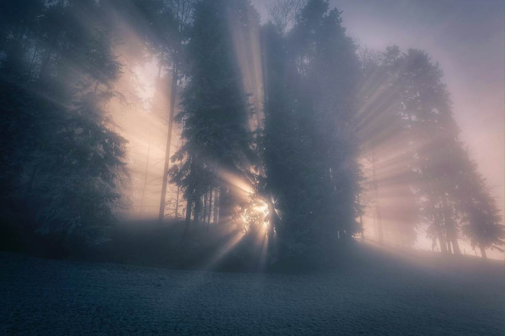
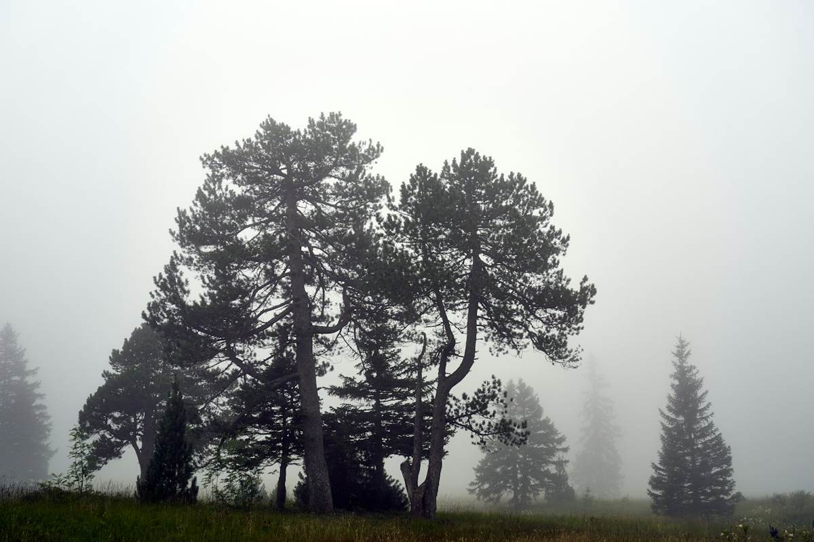
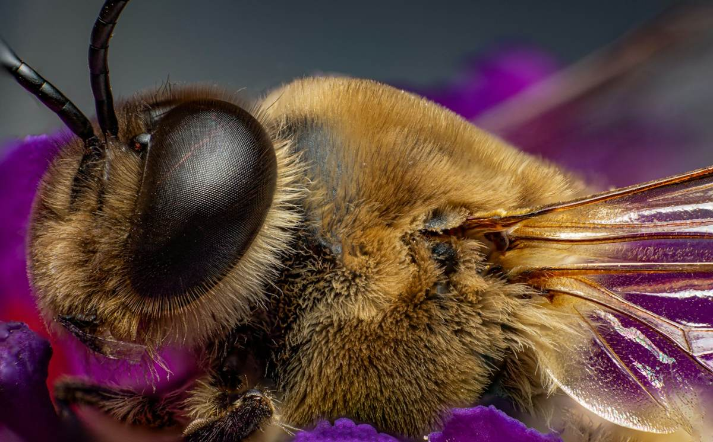

I · Sıfırlama
“Allah'ın yaratışında değişme yoktur.”
Rûm Sûresi, 30
Öyle bir saat vardır ki ev susar ve insan kendi içindeki sesleri duymaya başlar. Böyle bir saatte, bütün dillerden önce var olan o dilde bir cümle düştü içime: Fabrika ayarlarıma dönmek istiyorum.
Bu cümle cihazların cümlesidir. Hiçbir şey çalışmaz olduğunda o düğmeye basılır ve düğme, her şeyin başlangıçtaki gibi olacağına söz verir. Psikoloji bu sözü iyi tanır ve ona yeni başlangıç etkisi der: İnsan eşiklerde (pazartesi, ay başı, doğum günü) yeni bir hayata kalkışacak cesareti bulur, çünkü eşik, eski benliği geride bırakıyor gibi görünür.1 Bu etki ölçülebilir; ama kısa sürer. Bu cümleyi gerçekten kendine uygulamak isteyen, önce onu sınamak zorundadır; sınama da etkinin neden bu kadar kısa sürdüğünü açıklar. Ortaya iki şey çıkar. Birincisi: Sıfırlanan bir cihaz, teslimattan sonra eklenen her şeyi kaybeder. İnsan bunu yapamaz; hafızası silinmez, ancak üzerine yazılır; ve insan neye dönüşmüşse, o, artık olduğu şeyin bir parçasıdır. İkincisi: Geriye ne kalacağını sahibi değil, üretici belirlemiştir. O hâlde soru, geri dönmek isteyip istemediğim değildir. Soru, beni kimin yaptığıdır.
Cevap iki kelimeye sığdı ve o iki kelime, insanın karanlıkta kendi kapısının kolunu bulması gibi geldi: fıtrat – ve onu koyan, Allah azze ve celle.
Böylece sıfırlama daha başlamadan çürütülmüştü. Çünkü ben fabrika ayarlarımı hatırlamıyorum. Onlar ayarlanırken orada değildim; cihazı yalnızca bugünkü hâliyle, o günden beri üzerine eklenen her şeyle birlikte tanıyorum. İlk ayara dair ne biliyorsam, onu koyanın kılavuzundan biliyorum. Bu, bir hatıradan azdır; ama aynı zamanda fazlasıdır, çünkü hatıra yanıltabilir; üreticinin elinden çıkmış bir kılavuz ise yanıltmaz. Ve kılavuz, o ayarın üzerine hiç yazılmadığını söyler: Üzerine yazılan, sonradan gelendir; altta yatan değil. Allah'ın yaratışında değişme yoktur. Üzerine hiç yazılmamış olanın sıfırlanmasına gerek yoktur; ona yalnızca yeniden ulaşmak gerekir.
Böylece gecenin ilk kelimesi son kelimesine dönüştü: sıfırlama (Rücksetzung) değil, dönüş (Rückkehr). Geleneğin tam bunu karşılayan bir kelimesi vardır: tevbe, kelime anlamıyla geri dönmek. Bu denemenin yolu da bir kelimeden ötekine uzanır.
II · Pırlanta

Sonra gelen, duygular üzerine değil, bir nesne üzerine düşünmekti. Bu, bataklıkta yatan bir pırlantadır; şimdide değildir – olması gereken yerde değil, olması gereken zamanda değil, olması gereken durumda değil. Değerinden ise hiçbir şey kaybetmez.
Bu son cümle bir teselli değildir. Bir tespittir ve bundan sonra gelen her şey onun üstünde yükselir. Ben buna değerin verilmişliği (Wertgegebenheit) diyorum: Pırlantanın değeri kazanılmış değildir, hak edilmiş değildir, yakıştırılmış değildir. Verilmiştir, yani bir Vereni vardır. Gelenek bu armağana fıtrat der: her insanın üzerine yaratıldığı ilk maya. Müfessir Sa'dî (rh.) onu, Allah azze ve celle'nin her kalbe yerleştirdiği hakikat sevgisi olarak anlar; ondan çıkan, ancak sonradan araya giren bir sebeple çıkar.2 Sonradan araya giren: bataklığın tek kelimelik tarifi budur. Peygamber sallallahu aleyhi ve sellem bunu, pırlantanın yalnızca tekrar ettiği bir benzetmeyle söylemiştir: Her doğan fıtrat üzere doğar; tıpkı hayvanın azaları tam olarak doğması gibi: “siz onda kesik bir kulak görüyor musunuz?”3 Hayvan bütün doğar; kulağını sonradan bir başkası keser.
Nûr ayetinde Sa'dî (rh.), kandilin yağını, yani ateş değmese bile neredeyse kendiliğinden ışık verecek olan o yağı, fıtratın kendisi olarak yorumlar: saf, hazır, neredeyse kendiliğinden ışık.4 Benim pırlantam ile onun yağı, iki ayrı maddede söylenmiş tek bir sözdür. Malzeme daha baştan ışımaya elverişlidir; ama kendi kendine ışımaz, dışarıdan bir dokunuş ister.
Felsefenin bu mesafe için iki bin yıldır iki kelimesi vardır: kuvve ve fiil. Bir tohum kuvve hâlinde ağaçtır, fiil hâlinde tohum. Bataklıktaki pırlanta saf kuvvedir: Işığı geri yansıtma yetisi eksiksiz oradadır; gerçekleşmiş olan ise sıfırdır. Psikoloji aynı mesafeyi iki başka kelimeyle ölçmüştür ve bu ikisini birbirinden ayırmaya değer: öz-değer, ne olduğum sorusudur; öz-yeterlik, neyi başarabildiğim sorusudur.5 Bataklıktaki pırlantada birincisi eksiksiz, ikincisi sıfırdır. İkisini birbirine karıştıran, etkinin yokluğundan değerin yokluğu sonucunu çıkarır ve pırlantayı yontmaya koyulur. Bataklığın ilk yanılgısı budur; araştırma onu koşullu öz-değer adıyla tanır: Başarıya, görünüşe ya da takdire asılan bir değer, her koşulla birlikte sallanır ve onu taşıyanı yaşamak yerine koşulların hizmetine koşar.6 Carl Rogers bunun karşıtını, koşulsuz kabulü tarif etmiş ve onu her iyileşmenin şartları arasında saymıştır. Ne var ki onda bu kabul, verip vermemesi kendine kalmış bir başka insandan gelmek zorundadır.7 Değerin verilmişliği ise sarsılmayan Birinden gelen koşulsuz kabuldür. Verilmiş değerin, Şems Sûresi'nin dediği gibi, daha hiçbir şey yapmadan önce bir biçimi vardır: Allah azze ve celle orada nefse “ve onu şekillendirene” yemin eder.
Değerin verilmişliğinden, benim ışık borcu (Lichtschuld) dediğim bir şey çıkar. Verilmiş bir değer, borçlu bir değerdir: geri ödeme anlamında değil, yön anlamında borçlu. Kendi yapmadığı bir şeyi alan kişinin, etkisini göndereceği bir adresi vardır. Değerden anlam doğar, anlamdan sorumluluk, sorumluluktan ışıma, ışımadan güzellik; her halka bir sonrakini taşır. Zincir Verende başlar ve Onda biter.
III · Işık Yeri

Pırlanta, üzerine ışık düştüğünde etki eder; ışık da ancak onun bulunduğu yere düşer. Demek ki konumunu tarif ederken kullandığım üç koordinat (yer, zaman, durum) yalnızca nerede yattığını değil, ne için yapıldığını da anlatır. Şimdiki an, pırlantanın fazladan bir şey kazandığı bir yer değildir. Şimdiki an ışık yeridir (Lichtort): kuvvenin fiile geçtiği tek yer.
Psikoloji ışık yerini yalın bir adla ölçmüştür: dikkat. İnsan, dikkatinin olduğu yerdedir; iki araştırmacı binlerce insana günün rastgele saatlerinde o an nerede olduklarını sormuştur: Zamanın neredeyse yarısında zihinleri yaptıkları işte değildi ve bu yarıda, ne yaparlarsa yapsınlar, öteki yarıdakinden daha mutsuzdular.8 Dalıp gitmek zihnin bir kusuru değil, dinlenme hâlidir. Ama ışığı başka yerde olan pırlanta, güneş tepedeyken bile karanlıkta kalır.
Heidegger insana “fırlatılmış” (geworfen) demiştir: kendi dünyasına ve kendi zamanına, kendisine sorulmadan. Bu imge doğrudur; o saatte ben de onu kullandım: pırlanta böylece mekâna fırlatıldı, bir yere fırlatıldı, zamanla sarmalandı. Ama Heidegger'de fırlatan yoktur; bu yüzden onun temel duygusu kaygıdır. Benim cümlem devam etti: fırlatıldı – ışığın düştüğü yere. Atışın bir yönü vardı. Ben buna hedeflenmişlik (Gezieltheit) diyorum: İnsan yalnızca fırlatılmamış, hedeflenmiştir: bir yere, bir zamana, üzerine ışık düşebilecek bir duruma. Fırlatılmışlığın (Geworfenheit) kaygı doğurduğu yerde hedeflenmişlik bir soru doğurur: Allah azze ve celle beni ne için tam buraya hedefledi?
Sorunun bir düzeni vardır ve bu düzen her felsefeden eskidir. Yapılması gerekir, yapılsa iyi olur, yapılabilir. Fıkıh, eylemin beş mertebesini tanır ve bu mertebeler genel olarak neyin iyi olduğunu değil, şimdi neyin daha değerli olduğunu söyler. Ben bu kategoriye daha değerli olan (das Wertvollere) diyorum. Işık yerinin bütün ahlakı tek kelimede budur: Her durumda bir şey daha değerlidir ve hiçbiri ötekini geçersiz kılmaz. Son on yılların davranış terapisi aynı düşünceyi değer netleştirme adıyla yeniden keşfetmiştir: ulaşılıp üstü çizilen hedefler değil, her saat bir karara imkân veren yönler. Namaz vaktinde namaz daha değerlidir; daha acil olduğu için değil, onun bir vakti olduğu, ötekinin ise olmadığı için: “Namaz şüphesiz, inananlara belirli vakitlerde farz kılınmıştır” (Nisâ, 103). Acil durumda acil durum daha değerlidir, çünkü bir hayat ertelemeye gelmez; Peygamber sallallahu aleyhi ve sellem'in kendisi Hendek günü namazı ertelemiş, sonra kaza etmiştir.9 Düzeni koyan işte bu kadar merhametlidir. Şimdiki an, insanın kendi ürettiği bir ruh hâli değildir. Şimdiki an, her saat yeniden cevaplanabilecek bir sorunun cevabıdır: Şu anda daha değerli olan nedir?
IV · Örtü

Sonra bataklık. Ona üç adımda yaklaştım ve her adımda küçüldü. Bataklık entropidir, kimsenin elinden bir şey gelmeyen bir tabiat kanunu. Daha yakından bakınca bataklık dünyadır: biraz daha dar, ama hâlâ her şey. Daha da yakından bakınca bataklık, pırlantanın temelinde yatan şey değil, onu ulaşılmaz ve görünmez kılan eylemlerdir. Demek ki eylemler. Eylemler ise tabiat kanunlarının aksine değiştirilebilir.
Bu yüzden bataklığa bozulma değil, örtü (Bedeckung) diyorum. Kelime benim değildir; Kur'an-ı Kerim'de, arınmanın karşıtından söz edilen yerde geçer:
Mealin “fenalıklara gömmek” dediğini Sa'dî (rh.) örtmek diye açıklar: Kirletilmeyi hak etmeyen nefis, güzelliği gizlenene dek davranışlarla ve amellerle örtülür.10 Demek ki örtmek, yok etmek değil: Nefis örtülünce değerinden bir şey kaybetmez; görünürlüğünü kaybeder. Peygamber sallallahu aleyhi ve sellem de bu süreci madenin diliyle anlatmıştır: Kul bir hata işlediğinde kalbine siyah bir nokta konur; bırakır, bağışlanma diler ve dönerse kalbi cilalanır; yeniden hataya düşerse nokta büyür ve sonunda bütün kalbi kaplar.11 Örtü bir olay değil, bir birikimdir, nokta nokta. Panzehiri de noktalar kadar küçüktür.
Alışkanlık psikolojisi noktaları kendi titizliğiyle tarif eder: Aynı yerde, aynı ipucuyla yeterince sık yapılan şey niyetten kopar ve kendi kendine işler: telefona uzanmak, buzdolabına gitmek, ertelemek.12 Alışkanlık, kendi kendini koyan noktadır. Tembellik gibi hissettiren erteleme ise araştırmada başka bir şeydir: tatsız bir duygudan hemen şimdi kurtulma çabası, yarın olacağımız insanın hesabına.13 Davranış terapisi bu harekete yaşantısal kaçınma der: içeride hissedilmesi gerekenden, dışarıda daha kolay olana kaçış. Geleneğin ise bunun için aynı şeyi ve daha fazlasını söyleyen daha eski bir adı vardır: gaflet.
Kalbin hocaları (rh.) katmanları tek tek adlandırmıştır ve adlandırmak ilk ciladır: kendini pırlanta sanıp bataklığı başkalarına ayıran kibir; başkalarının pırlantasına baka baka kendininkini artık görmez olan haset; seyirci için amel; zemini bulandıran öfke; bataklığı sağlam zemin sanan dünya sevgisi; ve gaflet: en kalın katman, çünkü bir katman gibi değil, hayatın kendisi gibi hissedilir.
Örtünün kendine özgü bir devinimi vardır ve bunu görmekte bilim yardımcı olur. Psikolojinin ruminasyon dediği şey, yani insanın kendi hâli ve o hâlin sebepleri etrafında dönüp durması, çökkün ruh hâlini koyulaştırır, eylemi felç eder ve içinde döndüğü bataklığı derinleştirir.14 Bataklığın içinde bataklığı düşünmek bataklığı ayakta tutar. Kur'an-ı Kerim aynı devinime kötülüğü emreden nefis der: “Rabbimin merhameti olmadıkça” (Yûsuf, 53). İkisi de aynı şeyi söyler: Örtü karşı kuvvetle durdurulamaz; onu ancak başka bir yerden gelen bir şey durdurur.
Sartre burada da haklıdır: Seçmemek de bir seçimdir. Hiçbir şey söylememek de bir yoldur, hiçbir şey yapmamak da bir yoldur. Yerinde yatmaya devam eden pırlanta kararını vermiştir. Örtünün en sert yüzü budur, aynı zamanda da umudu. Çünkü örtü eylemlerden oluşur ve yerinde kalmak da bu eylemlerden biridir; yaparak örtülen, yaparak açığa çıkarılır. Ve yapmak, ileride görüleceği gibi, bir karış kadar küçük olabilir.
V · Yuva
Pırlanta alan, yanında bir yuva (Fassung) da alır. Pırlantayı yuvasız edinmek kimsenin aklına gelmez. O saatte önümde üç yuva vardı ve üçü de saygıdeğerdi. Yüzükte pırlanta, takan için süstür; matkap ucunda, sahibi için alettir; kasada mülktür, güvencedir, varlıktır. Üçünde de biri içindir. Hiçbiri onu kendi içinden açığa çıkarmaz.
Ben bu varoluş tarzına biri-için-olmak (Fürjemandsein) diyorum. Kötü bir şey değildir. Bütün dünya yuvalardan ibarettir ve kimse onların dışında yaşamaz. Ama biri-için-olmanın bir bedeli vardır ve psikoloji bu bedeli ölçmüştür: Yüz yirmi sekiz deney boyunca beklenen ödül (övgü, fayda, güvence) eylemin iç kaynağını zayıflatmıştır.15 Bu deneylerden doğan öz-belirleme kuramı o günden beri yuvadan gelen dışsal güdülenme ile taşın kendisinden gelen içsel güdülenmeyi birbirinden ayırır ve birincisinin, yeterince uzun süre ödendiğinde ikincisini yerinden ettiğini gösterir. Yuva için parlayan, kaynağını yitirir. Üç yuvanın ruh biliminde benimkilerden daha eski adları vardır. Yüzük, C. G. Jung'un persona dediği şeydir: yüze o kadar iyi oturan maske ki insan onu yüzün kendisi sanır. Matkap ucu, Alfred Adler'in telafisidir: doluluktan değil, yoksa küçük kalırım duygusundan doğan işe yararlık. Kasa, Erich Fromm'un sahip olma tarzıdır: her şeye (eşyaya, bilgiye, hatta imana) yaşanan bir hayat gibi değil, mülk gibi davranma biçimi.
Biri-için-olmanın karşısında kendiliğinden-olmak (Aussichheraussein) durur; Kant onu, ben bu kelimeyi bulmadan çok önce tarif etmiştir: Güzel, bir amaç düşünülmeden hoşa gidendir: amaçsız amaçlılık. Bir çiçek bir işe yaradığı için güzel değildir. Kendiliğinden ışıyan pırlanta hiçbir şey için değildir; güzelliği de buradadır. O gece açık kalan çelişki burada çözülür: Pırlanta nasıl hem hiçbir şey için olmaz hem de daha büyük bir amaç taşır? Çünkü daha büyük amaç faydada değil, görülmekte yatar. Peygamber sallallahu aleyhi ve sellem şöyle buyurmuştur: “Allah güzeldir, güzelliği sever.”16 Ve: “Allah sizin suretlerinize ve mallarınıza bakmaz; kalplerinize ve amellerinize bakar.”17 Demek ki yuvaya değil, pırlantaya bakar.
Geleneğin yanlış yuva için bir kelimesi vardır, riya, yani görülmek için amel etmek; bir de yumuşatmak istemediğim bir rivayeti: Kıyamet günü hakkında ilk hüküm verilecek üç kişi bir savaşçı, bir âlim ve bir cömerttir; her birine şöyle denir: Sen bunu, “ne cesur”, “ne âlim”, “ne cömert” densin diye yaptın; ve denildi.18 Ameller iyiydi; yuva yanlıştı. Yuva olmayan tek bir yuva vardır; adı şudur: Allah azze ve celle'nin rızası için. Çünkü o, pırlantayı biri için hazır tutmaz, Birinin önüne koyar. Biri için olmak, kullanılmak demektir. Birinin önünde olmak, görülmek demektir. Yuvasız bir pırlantanın sorumluluğu küçücük ve kesindir: temiz olmak ve yüzünü ışığa dönmüş olmak. Kendisi parlamak, ışık üretmek ya da seyirci toplamak ondan istenmez.
VI · Eğiklik
İki fiil ve ikisi de gerekli: yıkamak ve doğrultmak. Yıkanmış ama eğik duran bir pırlanta ışığı alttan kaçırır ve kusursuz olduğu hâlde karanlık görünür. Doğru duran ama kirli bir pırlanta hiçbir şey yansıtmaz. Görünür olması için hem yıkanmış hem de doğrultulmuş olması gerekir. Örtü sorunun bir yarısıdır, eğiklik (Verkippung) öteki yarısı; ve eğikliği görmek daha zordur, çünkü eğik bir pırlanta yukarıdan karanlık görünür, aşağıdan parlar; ışığı kaybolmamıştır, gözün olmadığı yerden çıkmaktadır. Jung'un gölge dediği şey budur: ışık eksikliği değil, yanlış çıkıştan sızan ışık; eksik olmayan, yalnızca öte yana dönük duran yaşanmamış hayat.
İki fiilden, düşünürlerin tökezlediği soru doğdu: Kim yıkar, kim doğrultur? Kimi her şeyin zorunluluk olduğunu söyledi; kimi de insanın fiillerini kendisinin yarattığını. İkisi de yüzde yüz; ikisi de tökezledi. Psikoloji aynı tartışmayı tek tek her insanın içinde yeniden bulmuş ve ona denetim odağı demiştir: İnsan hayatının kendi elinde olduğuna mı inanır, yoksa başına gelenlerin elinde olduğuna mı?19 Ve iki uçta ne olduğunu göstermiştir. Bir uçta öğrenilmiş çaresizlik vardır (kaçınılmaz darbeler yeterince tekrarlandıktan sonra kapı açık dursa bile yerinden kıpırdamayan hayvan20), yani kendini çamur sanan pırlanta. Öteki uçta her şeyi tek başına taşımak isteyen ve yükün altında kırılan mutlak güç vardır: kendi kendine parlamak isteyen pırlanta. Benim cevabım o saatte elimdeki tek cevaptı ve sonradan en eski cevap olduğu ortaya çıktı: hiçbiri yüzde yüz değil. İçinden geldiğim geleneğin âlimleri (rh.) bunu şöyle öğretmiştir: seçen gerçek, insanın kendine ait bir irade ve fiili yaratan bir Başkası.
İbn Kayyim (rh.) bu paylaşımı Nûr ayetinden okumuştur; ben onu hiçbir yerde bundan daha kesin bulmadım:
Bu nurun, diye yazar, bir faili, bir alıcısı, bir yeri, bir taşıyıcısı ve bir maddesi vardır. Fail, nurları saçan Allah azze ve celle'dir; alıcı kuldur; yer onun kalbidir; madde onun sözü ve amelidir; taşıyıcı (Träger) ise azmi, iradesi ve çabasıdır.21 Eğiklik böylece açıklanmış olur: Kandili taşıyıcı tutar ve taşıyıcı benim irademdir. Pırlantayı onu tutan doğrultur; onu tutan benim iradem; ışığı yapan ise bir Başkası. Ben taşıyıcıyı kımıldatırım, o kadar; ışık gelir.
Kierkegaard aynı şeyi felsefe cephesinden, en önemli kitabının ilk sayfasında söylemiştir: Benlik, kendisiyle ilişki kuran bir ilişkidir ve kendini kendisi koymamıştır. Bu yüzden kendini iki biçimde ıskalayabilir: umutsuzca kendisi olmak istemeyerek (kendini çamur sanan pırlanta) ve umutsuzca, kendi gücüyle, onu koyan olmaksızın kendisi olmak isteyerek (kendi kendine parlamak isteyen pırlanta). İkisi de umutsuzluktur ve umutsuzluk, eğiklikten başka bir şey değildir. Umutsuzluğun olmadığı hâlin formülü onda şöyledir: Benlik, kendisini koyan güçte saydam biçimde temellenir.22 Saydam, yani: yıkanmış. Temellenmiş, yani: doğrultulmuş.
Peki taşıyıcının hareketi ne kadar küçük olabilir? Allah azze ve celle hadis-i kudsîde şöyle buyurur: “Kulum Bana bir karış yaklaşırsa Ben ona bir arşın yaklaşırım. Bana bir arşın yaklaşırsa Ben ona bir kulaç yaklaşırım. Bana yürüyerek gelirse Ben ona koşarak gelirim.”23 Ben bu harekete bir karış adım (Handspannenschritt) diyorum. Taşıyıcıyı döndüren en küçük harekettir; görüleceği gibi, girdabın içinde hâlâ mümkün olan tek hareket de budur.
VII · İthaf
Girdap gelmeden önce taşıyıcıyı neyin kımıldattığını söylemem gerek. Işık değil; çünkü ışık dışarıdan gelir. Bataklık da değil; çünkü o aşağı çeker. Taşıyıcıyı kımıldatan, bütün yaratılış içinde yalnızca seçmenin mümkün olduğu yerde bulunan bir şeydir.
Kur'an-ı Kerim göklerde ve yerde ne varsa hepsinin O'na “ister istemez” teslim olduğunu söyler (Âl-i İmrân, 83) ve Allah azze ve celle'nin göğü ve yeri nasıl çağırdığını anlatır: “İsteyerek veya istemeyerek buyruğuma gelin. İkisi de: İsteyerek geldik, dediler” (Fussilet, 11). Göğün seçeneği yoktur; yine de cevap vermiştir. Güneş isteyerek doğmaz, arı isteyerek uçmaz, pırlanta ışığı isteyerek kırmaz. Her şey ışığa dönüktür, çünkü başka türlü olamaz. Yalnızca seçebilen bir yaratılmış başka türlü olabilir (Kur'an-ı Kerim cinleri ve insanları sayar, ben burada insandan söz ediyorum) ve tam da bu yüzden isteyerek kelimesi yalnızca onda içerik kazanır. Yalnızca insan ışığa yönelebilir, çünkü yalnızca o yüz çevirebilir.
Ben buna ithaf (Widmung) diyorum. Bir kitabın ilk sayfasında bir ithaf durur: Biri için. Yazar kitabı kendisi için yazmamıştır; ithaf ettiği kişiyi de o yaratmamıştır. Ama ithafı kendisi yazar, kendi isteğiyle; ve kitapta kimsenin ondan isteyemeyeceği tek şey ithaftır. İnsan da böyledir: Değerini kendisi yapmamıştır, ışığı da. Ama yöneliş, yani pırlantanın onu Yaratana ithafı, yalnızca onun kendi elinden çıkabilir. Ne için yaratıldığını Kur'an-ı Kerim tek cümlede söyler:
Sa'dî (rh.) burada sözü edilen kulluğu bir görev olarak değil, bir ilişki olarak açıklar: Kulluk, Allah'ı tanımayı, O'nu sevmeyi, O'na dönmeyi, O'na yönelmeyi ve O'ndan başka her şeyden yüz çevirmeyi kapsar – kul Rabbini ne kadar tanırsa kulluğu o kadar kemale erer. Onları bunun için yaratmıştır; onlara ihtiyacı olduğundan değil.24 İbn Kayyim (rh.) bir adım daha atar ve her ithaftan önce gelen soruyu cevaplar: Bu kime yarar? Onları ihtiyaçtan yaratmamıştır, onlardan bir kazanç elde etmek için de değil; cömertliğinden ve lütfundan yaratmıştır: O'na kulluk etsinler ve bütün kazancı da kendileri götürsünler diye. Buyrulduğu gibi: “İyilik ederseniz kendinize iyilik etmiş olursunuz” (İsrâ, 7).25 Demek ki ithaf bir vergi değildir; pırlantanın elindeki tek şeydir ve ona geri döner.
Bu okumayı kendisine borçlu olduğum Kur'an hocası Nouman Ali Khan, Dubai'deki bir konuşmasında bunu tek cümleyle söylemiştir: Her şeye sahip olana sunacak hiçbir şeyimiz yoktur – dualarımız bile; biz, O'nunla uyum içinde olduğumuzu hissettiğimiz için dua ederiz. Konuşmayı aktaran gazete haberi de bu kulluğu şerefli bir kulluk diye niteler.26 Başka bir yerde ithafın karara bağlandığı noktayı göstermiştir: Allah azze ve celle'yi Yaratıcı olarak kabul etmek kolaydır; asıl imtihan O'nu Rab olarak, kendini de kul olarak kabul etmektir. Rab ile, bir işverenle pazarlık edilir gibi pazarlık edilmez. Yine de bu kulluk sadakatten, şükürden, sevgiden, dostluktan ve zikirden oluşur: “Beni anın, Ben de sizi anayım” (Bakara, 152).27 Kul her zaman kuldur; namazlar arasında olup bitenler kalbin hâlini gösterir.28 Bu denemenin özü İslamidir, çözümü de öyle: kendi kendini özgürleştiren bir insan değil, kendi isteğiyle Rabbine adanan ve böylece başka her şeyden kurtulan bir kul.
İthafın özgür olması gerektiğini Kur'an-ı Kerim açıkça söyler; hem de bunu en az beklenecek yerde söyler:
Sa'dî (rh.) sebebini açıklar: Zorlama ancak alametleri gizli, etkileri karanlık bir şeyde ya da nefsin derinden tiksindiği bir şeyde gerekli olur. Bu yol ise akıl için apaçık hâle gelmiştir; doğru basiret verilen kimse onu ilk bakışta seçer. Zorla iman edenin imanı ise geçerli değildir.29 İthafın ancak kendi isteğiyle yazılabilmesinin bütün sebebi budur: Zorla elde edilmiş ışık, ışık olmazdı. Psikoloji bunu kendi laboratuvarında doğrulamıştır. Adı tepkisellik (reaktans): Bir insanın bir şeyi seçme özgürlüğü elinden alınırsa tam tersini ister; daha iyi olduğu için değil, kendisinin olacağı için.30 Öz-belirleme kuramı da on yıllar boyunca bir eylemin ancak özerkleştiğinde kalıcı olduğunu göstermiştir: dışarıdan dayatılmamış, salt vicdan azabıyla üstlenilmemiş, kişinin onu kendi malı olarak tanıyacağı kadar içine işlemiş.31 Bu kuramın her serpilmenin şartı saydığı üç ihtiyacın, yani özerklik, yeterlik ve ilişkililiğin üçü de bu tek ayette yer alır: özerklik, çünkü zorlama yoktur; yeterlik, çünkü hak ile batıl iyice ayrılmıştır; ilişkililik, çünkü işiten ve bilen bir Rab vardır.
Filozoflar özgürlüğü göklere çıkarmış, sonra da onun karşısında umutsuzluğa düşmüştür. Kant ona özerklik demiştir: İnsan yasasını kendisi koyar. Sartre insanı özgürlüğe mahkûm saymıştır: İnsan, ne için seçeceğini kimse söylemeden seçmek zorundadır. Özgürlüğü ikisinden de iyi bilen Viktor Frankl (çünkü onu özgürlüğün hiç olmadığı yerde bulmuştu) özgürlüğün hakikatin yalnızca yarısı olduğunu söylemiştir; sorumluluk olmadan özgürlük salt keyfîliğe dönüşür32; sorumluluk ise bir başkasının sorduğu soruya cevap vermektir. İthaf, Frankl'ın öteki yarısıdır. İnsan yasasını kendisi koymaz ve boşluğa doğru seçmez. Bir Başkasının tuttuğu kulpa yapışır ve bu tutunuş, yalnızca bu, onundur. Kelamcıların hiçbiri yüzde yüz değil sözüyle kastettiği budur: Kulp verilmiştir; tutunmak serbesttir.
VIII · Girdap ve Çıkarılma
Soru artık pırlantanın kim olduğu değildi; soru şuydu: İnsan bu çalkantıdan, bu girdaptan (Sog), bataklığın içindeki o bulanık görüşten nasıl çıkar?
Girdap, hareket hâlindeki örtüdür: ortaya çıkıp “peşinden git” diyen mekanizma; daha değerli olmayan bir şeye yapışıp kalan dikkatin peşinden. Saati yoktur; gecenin sessiz saatinde de gelir, bir işin eşiğindeki aydınlık sabahta da. Ve onu ele veren bir işareti vardır: “Hani şunu bunu halledecektin” diyen ses kısıktır ve eylemsizdir. “Yapabilirim” der. “Gidiyorum” demez.
Cevabı fizikte buldum ve bu bir mecaz değildir. Bataklıkta ya da kum batağında debelenen batar. Fizikçiler kum batağını laboratuvarda incelemiştir: Hareket edildikçe sıvılaşır, sonra daha sıkı kavrar; bir insan onun içinde tamamen batamaz, çünkü beden çamurdan daha az yoğundur, ama direndikçe daha derine gömülür ve çamur onu daha sıkı tutar.33 Hareket çamuru sıvılaştırır, durmak onu taşır hâle getirir. Psikoloji debelenmeyi kendi adıyla tanır, ironik süreçler: Bir düşünceyi zorla bastırmaya kalkan onu çağırır, çünkü zihnin başarıyı denetleyen kısmı bunun için o düşünceyi durmadan aramak zorundadır.34 Bataklıkla savaşmak, bataklıktır. Yaratıcısından uzaklaşan debelenir (strampelt). Buradan, paradoks gibi görünen ama aslında yalnızca olanı tarif eden cümle doğar: Girdaptan çıkılır, çünkü çıkarılır; savaşıldığı için değil. Ben buna çıkarılma (Herausgebrachtwerden) diyorum: Girdaptan kurtuluş, tek bir etkin noktası olan bir edilgenliktir ve o etkin nokta bir karış adımdır: ithafın en küçük hareketine indirgenmiş hâli.
Kur'an-ı Kerim çıkarılmayı adıyla anar, sağlam kulp ayetinin hemen ardından:
Küfrün, günahların ve cehaletin karanlıklarından, diye açıklar Sa'dî (rh.), imanın, itaatin ve ilmin aydınlığına – çünkü O'nu dost edinmiş ve başkasını aramamışlardır.35 Ayetteki sıra, kurtuluşun sırasıdır: önce dost, sonra çıkış. Mümin kendini aydınlığa kendisi çıkarmaz; çıkarılır.
Gelişim psikolojisi bu sırayı her hayatın başlangıcından tanır. Bir bebek kendini yatıştıramaz; yatıştırılır: bedeni sükûnetin ne olduğunu öğrenene kadar onu kucağında tutan bir başkası tarafından. Psikoloji buna eş-düzenleme der ve öz-düzenlemenin, içselleştirilmiş eş-düzenlemeden başka bir şey olmadığını bilir. Girdabın içinde oturan insan, tutulması gerekiyor diye gerilemiş değildir; her insanın başladığı yerdedir. Eylem bilimi de bu edilgenlik için bir yöntem bulmuştur; adı davranışsal aktivasyon ve çoğu insanın beklediği sıranın tersine çevrilmesinden ibaret: Önce istemek, sonra yapmak değil; önce yapmak, hâl arkadan gelir. Yirmi altı kontrollü çalışmada bu ters çevrilmiş sıra, felç hâline karşı karşılaştırma koşullarından belirgin biçimde üstün çıkmıştır.36 İsteyene kadar bekleyen, bataklıkta bekler.
O saatte düşünmeyi bıraktım ve istemediğim şeyi yaptım. Kalktım, suya gittim. Burada çok dikkatli olmam gerekiyor, çünkü hurafe tam bu noktada başlar. Mesele su değildi; su tek başına büyü olurdu: ıslak olduğu için işe yarayan bir araç. Mesele abdestti: benden önce sayısız kez alınmış bir eylem; belli uzuvlar, belli bir sıra: eller, ağız, burun, yüz, dirseklere kadar kollar, baş, kulaklar, ayaklar. Bedeni, kendi icat etmediği bir düzenden geçirir ve kendi içinde bitmez, namazın önünde biter. Büyü ile ritüelin farkı budur: Büyü bir şey elde etmek ister; ritüel ise insanı Birinin önüne koyar. Abdest, içimden istemediğim hâlde alındı. Bir namaz kılındı; Yaratıcının huzurunda durulduğuna dair hafif bir bilinçle. İnsanın bir hiç olduğu ve O'nun, kendini nasıl adlandırıyorsa öyle olduğu söylendi: İşte böyle geliyorum Sana.
Bu cümleleri edilgen bırakıyorum, çünkü doğrusu budur: O dakikalarda bir şey yapan ben değildim; üzerinde bir şey olup biten bendim. Taşıyıcı bir karış kımıldatılmıştı ve ışık, hadisin dediği gibi, koşarak geldi. Sonra listeyi okuyan ses kısıldı. Ne boşluk vardı ne baskı: nötr. Ve öğrendim ki girdaptan sonra nötrlük az bir şey değil, en büyük şeydir. Psikoloji şöyle derdi: Sinir sistemi alarm hâlinden temel düzeyine dönmüştür; sevinç değil, keder değil, düzenlenme. Kur'an-ı Kerim bu hâli adıyla anar ve ona bütün delillerden daha ağır basan tek çağrıyı yöneltir: “Ey huzur içinde olan can! O, senden, sen de O'ndan hoşnut olarak Rabbine dön!” (Fecr, 27–28). Kur'an-ı Kerim'in üç nefsi (kötülüğü emreden, kendini kınayan, huzura ermiş) ne üç ayrı insandır ne de bir kez çıkılan basamaklar; insan üçünü bir saat içinde geçer ve arada bir kavrayış değil, bir eylem vardır.
O saatte kendime not ettiğim beş adımın, sonradan eski sıranın yeni kelimelerle söylenmiş hâli olduğu ortaya çıktı: Kontrolü bırakmak, yani tevekkül; terapinin kabul dediği şey, ama fazlası, çünkü bırakılacak Biri vardır. Umut toplamak: recâ. Küçük kımıldamak: amel. Bir hiç olduğunu görmek: ubudiyet. Ve tutunmak: “Toptan Allah'ın ipine sarılın” (Âl-i İmrân, 103). Bir ip, hem de hep birlikte. Kimse kendini bataklıktan tek başına çekip çıkaramaz. İp iki ucundan tutulur; öteki ucunda insanlar ve sabit vakitler vardır, beş vakit namaz: bireyden çıkmayan ve pazarlığa açık olmayan bir ritim. Peygamber sallallahu aleyhi ve sellem debelenmemeyi bir emir olarak söylemiştir: “Din kolaylıktır; kim dini zorlaştırırsa din ona galip gelir. … Sabahtan, akşamüstünden ve gecenin bir kısmından yardım alın.”37 Demek ki gecenin bir kısmı, tamamı değil.
IX · Kolay Kılınmışlık

Daha aynı saat içinde, uyanık ve nötr, arı geldi. Ona uçmayı kimse öğretmemiştir. Kovandan çıkar, çayırı bulur, dönüş yolunu bulur ve içinden çıkan şey şifadır – ve bütün bunlardan haberi yoktur.
Allah azze ve celle'nin arıya ilham ettiği kelime, peygamberlere (aleyhimüsselam) gelen vahiy için kullanılan kelimenin aynısıdır. Arının ilhamı vardır, öğretmeni yoktur; yolları da gösterilmiş, düzlenmiştir: Yaptığı şey ona güç harcatmaz, çünkü yol ondan önce zaten oradaydı. Bundan o gecenin yedinci cümlesi doğdu: Ona yolları nasıl kolay kılındıysa, ben de bana kolay kılınanı arıyorum. Gelenek buna şâkile der (“De ki: Herkes yaradılışına göre davranır”, İsrâ, 84) ve Peygamber sallallahu aleyhi ve sellem, “o hâlde amel ne için?” sorusuna şöyle cevap vermiştir: “Herkese, ne için yaratıldıysa o kolay kılınır.”38
Ben buna kolay kılınmışlık (Leichtgemachtsein) diyorum; hedeflenmişliğin öteki yüzüdür: Hedeflenmiş olana bir yol da düzlenmiştir ve bu yol herkes için aynı değildir. Herkes başka türlü fırlatılır, herkese başka türlü kolay kılınır. Ruh biliminin bunun için birbirini tamamlayan üç kelimesi vardır. Adler, insanın hedeflerine doğru ilerlerken kullandığı, erken yaşta şekillenmiş kendine özgü tarza yaşam tarzı demiştir: el yazısı kadar kişisel, tanınabilir, düzeltilebilir ama değiştirilemez. Jung, ona giden yola bireyleşme demiştir: yeni bir insan icat etmek değil, eskisini, taşıdığı bütün yaşanmamışlıkla birlikte açığa çıkarmak. Son on yılların araştırması ise insanın düzlenmiş yolunda olduğu hâli ölçmüş ve ona akış demiştir: beceriye o kadar iyi oturan uğraş ki zaman kaybolur ve çaba çabaya benzemez.39 Uçuştaki arı: yontmak değil, açığa çıkarmak.
Kolay kılınmışlık bir teselli değil, bir çağrıdır; çağrı da seçilmez, verilir. Kur'an-ı Kerim bunu, çoğunlukla bir hafifletme olarak okunan ve gerçekten de öyle olan bir ayette söyler:
Ama ayetin, tersinden okuduğum ikinci bir yüzü vardır: Taşıyamayacağı hiçbir şey yüklenmeyen kimseye, taşıyabildiği sorulacaktır. Ayet bunu ikinci yarısında kendisi söyler: Ettiği kötülük de aleyhinedir. Kolay kılınmışlık, sorumluluğun ölçüsüdür. Benden büyük olan istenmez, ama bana kolay kılınan benden istenir; tam da kolay kılındığı için. Arıya şarkı söyleyip söylemediği sorulmaz; uçup uçmadığı sorulur.
Kolay kılınmışlığın abdest için geç fark ettiğim bir sonucu vardır. Sinir sistemi hareketsizlikle sükûnete ermeyen bir insan için (araştırma böyle insanların var olduğunu gösterir: öz-düzenlemede biraz daha zayıf, ondan yoksun değil40) sükûnet yatmak değil, ritimdir: hareket, nefes, tekrar. Yüze çarpılan soğuk su bir refleks yoluyla kalp atışını yavaşlatır. Kıraat, hecelere bölünmüş yavaş bir nefes verişidir. Namazın akışı döngüler hâlinde harekettir. Böyle bir insan için namaz engel değil, sükûnete ulaşabildiği biçimin ta kendisidir: on dört yüzyıl önce onunki gibi bedenler için düzlenmiş bir ritim. Biyolojinin onayladığı kolay kılınmışlık budur: Ona düzlenen yol, kıpırdamadan oturmak değil, ritimdir.
Aramanın ölçüsünü de Peygamber sallallahu aleyhi ve sellem vermiştir; Allah azze ve celle'nin en sevdiği amelin hangisi olduğu sorulduğunda: “Az da olsa devamlı olanı.”41 Şâkileyi aramak kendini yontmak değil, yavaşlamak ve büyük olanı değil, doğru olanı yapmak demektir.
X · Çapa
Bir saat bir kural değildir. İmgeden bir tutamak çıkması gerekiyordu ve tutamağın bir adı vardır: çapa (Anker). Çapa ağır olduğu için tutmaz; çekiş gelmeden önce dibe oturduğu için tutar.
Kur'an-ı Kerim tutamağı benden önce adlandırmıştır. Allah azze ve celle'ye yönelen, “kopmak bilmeyen sağlam bir kulpa sarılmıştır” (Bakara, 256). Sa'dî (rh.) kulpu, temelleri sağlam ve direkleri köklü dosdoğru iman olarak açıklar; ona tutunan işinden emindir, çünkü kopmayana tutunmaktadır.29 Ayette iki şey vardır ve ikisi de çapaya aittir: Kulp kopmaz; bu benim marifetim değildir. Ve ona tutunan benim; bu, tek bir tutunuşa sığmış ithaftır. Atılmayan çapa hiçbir gemiyi tutmaz.
Çekiş girdaptır ve girdabın saati yoktur. Bu yüzden kural bir saate değil, girdabın işaretine bağlanır: yapışan dikkate, kısık ve eylemsiz sese. Kuralın kendisi tek bir cümledir:
Neden bu biçimde bir cümle? Çünkü niyet araştırmaları, salt niyetlerin az şey, eğer–o zaman planlarının ise çok şey başardığını göstermiştir: Bu planlar eylemi bir tetikleyiciye bağlar ve o andaki kararın yükünü sırttan alır.42 Alışkanlık araştırması bunun neden işe yaradığını açıklar: Örtü, kendiliğinden tetikleyen ipuçları üzerinden işler; eğer–o zaman planı ise aynı ipucuna başka bir eylem bağlar, ta ki o da kendiliğinden işleyene kadar.12 Tetikleyici, yani girdap, her niyetten daha güvenilir biçimde gelir. Kural, düşmanı çalar saate çevirir. Buradaki bir karış adım namaz değildir, hatta abdestin tamamı bile değildir. Şudur: kalkmak, suya gitmek, sağ el. Yer değiştirmek açı değiştirmektir: düşünmek değil, gitmek. Sonrası, o saatte daha değerli olana göre belirlenir: namaz vaktindeyse farz namaz; değilse iki rekât ve bir dua; fıkıh âlimlerinin nafile namazdan sakındırdığı vakitlerde ise abdest ve zikir kalır, namaz bekler.43 Çapa namaz değil, abdesttir; namaz, abdestin mümkün kıldığı şeydir. Girdap günde on kez gelirse abdest de on kez gelir; abdest bunun için yeterince küçüktür. Çapanın namaz değil de abdest olmasının bir sebebi de budur.
Çapanın her zamankinden ağır bastığı bir saat vardır: bu denemenin başladığı saat. Peygamber sallallahu aleyhi ve sellem şöyle buyurmuştur: “Mübarek ve yüce Rabbimiz her gece, gecenin son üçte biri kaldığında dünya semasına iner ve şöyle buyurur: Bana dua eden yok mu, duasına icabet edeyim? Benden isteyen yok mu, ona vereyim? Benden bağışlanma dileyen yok mu, onu bağışlayayım?”44 Bu saatte dağınıklık bir yönden gelen tekliftir; öteki yönden ise bir soru gelir. Bu saatte zaten uyanık olan kimse, özel bir teklifin yapıldığı yerdedir. Ama gelenek bu önceliğe hemen bir ölçü koyar ve ölçü, öncelikten önemlidir: “Amellerden gücünüzün yettiğini alın; çünkü siz usanmadıkça Allah usanmaz.”41 Uyuyan hiçbir şey kaçırmaz; uyanık olan abdest alır.
Kural ancak bir hafta tuttuğunda insanın kendi kuralı sayılır. Yedi gün namaz değil; girdap geldiğinde abdestin de geldiği yedi gün. Girdapsız günler yaşanmış sayılır. Sonra hiçbir niyetin başaramadığı ve psikolojinin davranıştan benlik kavramına geçiş dediği şey olur: Eylem, insanın kim olduğunun bir parçası hâline gelir. İnsan artık “suya gitmeye çalışıyorum” demez; “ben suya giden biriyim” der.
XI · Dönüş
Fabrika ayarlarına dönmek istiyordum ve aynı saat içinde kelimenin yanlış olduğunu fark ettim. Sıfırlanan cihaz, sonradan ekleneni kaybeder. Ben hiçbir şey kaybetmedim. Çamurda yatan bir pırlantam var ve onu çekip çıkarmadım: Debelenmeyi bıraktım, birkaç adım suya yürüdüm ve istemediğim hâlde abdest aldım. Sonra ışık geldi; dışarıdan, her zamanki gibi.
Dönüşün bir tonu vardır ve dönüşün başarıp başaramayacağına o ton karar verir. Dönerken kendini hor gören, bataklığa döner; ruminasyon yalnızca konu değiştirmiştir. Psikoloji öteki tonu incelemiş ve ona öz-şefkat demiştir: başarısızlıkta kendine bir dosta bakar gibi bakmak. Ve bulmuştur ki insanları yeniden harekete geçiren sertlik değil, tam da bu tondur.45 Geleneğin bunun için ayrı bir kelimeye ihtiyacı olmamıştır, çünkü ton zaten tevbe kelimesinin içindedir: İnsan, kapıyı kapatmamış Birine döner. Dönüş insanın kendine verdiği bir ceza değildir; koşarak karşılayana giden yoldur.
Bu denemenin bütün yolu budur ve kendi kelimeleriyle ezberden okunabilir. Değerin verilmişliği: Değer verilmiştir ve değişmez. Işık borcu: Verilmiş olanın bir adresi vardır. Hedeflenmişlik: Ben yalnızca fırlatılmış değilim, hedeflenmişim: daha değerli olanın her saat bulunabileceği ışık yerine. Örtü: Bataklık pırlanta değildir; eylemlerdir, nokta nokta. Yuva: Biri-için-olmak kaynağı yitirir; kendiliğinden-olmak hiçbir şey için değildir ve tam da bu yüzden görülür. Eğiklik: Taşıyıcı benim irademdir, ışığı bir Başkası yapar; hiçbiri yüzde yüz değil. İthaf: Her şey ışığa dönüktür, çünkü başka türlü olamaz; yalnızca insan yönelir, çünkü yüz çevirebilirdi ve yönelişi yalnızca bu yüzden bir şey eder. Girdap ve çıkarılma: Debelenen batar; bir karış adımı atan çıkarılır. Kolay kılınmışlık: Düzlenmiş yol herkes için aynı değildir ve kimileri için ritimdir; bir çağrıdır ve ondan sorulur. Çapa: girdap ne zaman gelirse gelsin abdest, kopmayan kulpa tutunuş. Ve sonunda dönüş, yani tevbe. Bu bir sıfırlama değildir, çünkü hiçbir şeyin üzerine yazılmamıştır.
Bu imgeyi sonra, bu konuda söyleyecek sözü olan herkesin önüne koydum: Kur'an-ı Kerim müfessirlerinin, nefis ilminin, Aristoteles'ten Kierkegaard'a filozofların, kum batağından alışkanlığa kadar bilimlerin. Bu seslerden hiçbiri onu çürütmedi. Her biri ona bir yüz ekledi. Birbirleriyle çeliştikleri yerlerde (fırlatanda, adreste, verilmiş değer ile yansıtılmış değerde, boşluğa doğru seçen özgürlük ile tutunan özgürlükte) kavrayış, çelişkinin kendisinde yatıyordu. Konuşmanın tamamı kitapta duruyor; burada ise kitap kapandığında geriye kalan var.
Sen, kendini nasıl adlandırıyorsan öylesin –
ben ise bir hiçim.
Her iyiliği veren Sensin,
bana her iyilikten ver.
Koruyan Sensin,
beni her kötülükten koru.
İşte böyle geliyorum Sana:
Sen daha iyi bilirsin, Sen daha iyi tanırsın
ve Senin sözün daha iyidir.
Bağışlayan Sensin, bağışla.
Doğru yola ileten Sensin, doğru yola ilet.
Ve ben istemediğimde –
hangi saatte olursa olsun –
bırak, ellerim irademden önce
suya gitsin.
Fabrika kapandı. Sıfırlanmadı, geri döndü.
Kavramlar
Sıfırlama / Dönüş (Rücksetzung / Rückkehr) – Cihaz sıfırlanır ve sonradan ekleneni kaybeder; insan döner ve hiçbir şey kaybetmez, çünkü ayarının üzerine hiç yazılmamıştır. Dönüş, tevbenin Türkçe karşılığıdır. Psikolojik olarak: Yeni başlangıç etkisi sıfırlamayı vaat eder ve kısa sürer; öz-şefkat ise dönüşün başarıya ulaştığı tondur.
Değerin verilmişliği (Wertgegebenheit) – İnsanın değeri verilmiştir, kazanılmamıştır; etki etmeden önce bir biçimi vardır. Etkinin yokluğu, değerin yokluğunu kanıtlamaz. Psikolojik olarak: Öz-değer, öz-yeterlik değildir; koşullu öz-değer değeri koşullara asar, koşulsuz kabul onu koşullardan çözer; burada, sarsılmayandan gelen kabul.
Işık borcu (Lichtschuld) – Verilmiş bir değer, borçlu bir değerdir: Etkisinin gideceği bir adresi vardır. Değerden anlam, sorumluluk, ışıma ve güzellik doğar.
Hedeflenmişlik (Gezieltheit) – Heidegger'in fırlatılmışlığına (Geworfenheit) karşı: İnsan yalnızca fırlatılmamış, hedeflenmiştir, üzerine ışık düşebilecek yere. Temel duygu kaygı değil, sorudur.
Işık yeri (Lichtort) – Kuvvenin fiile geçtiği tek yer olarak şimdiki an: zaman, yer, durum. Psikolojik olarak: Dikkat. İnsan, dikkatinin olduğu yerdedir; dalıp gitmek zihnin dinlenme hâlidir ve mutsuz eder.
Daha değerli olan (das Wertvollere) – Şimdinin kategorisi: Her durumda bir şey daha değerlidir ve hiçbiri ötekini geçersiz kılmaz. Namaz vaktinde namaz, acil durumda acil durum. Psikolojik olarak: Değer netleştirme, yani hedefler yerine yönler.
Örtü (Bedeckung) – Bataklık: bozulma değil, pırlantayı görünmez kılan eylemler ve ihmaller, nokta nokta. Panzehiri, noktaları kadar küçüktür. Psikolojik olarak: Alışkanlık ve ipucu, yaşantısal kaçınma, duygu düzenleme olarak erteleme, kendine özgü devinim olarak ruminasyon.
Biri-için-olmak / Kendiliğinden-olmak (Fürjemandsein / Aussichheraussein) – Yuva (Fassung): Yüzük, matkap ucu ve kasa pırlantayı biri için var eder ve bunun bedeli kaynaktır. Kendiliğinden olduğunda pırlanta hiçbir şey için değildir ve tam da bu yüzden görülür. Psikolojik olarak: dışsal güdülenmeye karşı içsel güdülenme; persona (Jung), telafi (Adler), sahip olma (Fromm).
Eğiklik (Verkippung) – Yıkanmış ama yanlış duran pırlanta: Işığı, gözün olmadığı yerden çıkar. Kierkegaard'ın umutsuzluğu, İbn Kayyim'in (rh.) yerinden kaymış taşıyıcısı. Psikolojik olarak: gölge (Jung); iki ucuyla denetim odağı: öğrenilmiş çaresizlik ve mutlak güç.
Taşıyıcı (Träger) – İbn Kayyim'e (rh.) göre: azim, irade, çaba. Kandili tutan ve doğrultan şey; benim payım, hiçbiri yüzde yüz değil.
İthaf (Widmung) – Yaratılıştaki her şey ışığa dönüktür, çünkü başka türlü olamaz; yalnızca insan yönelir, çünkü yüz çevirebilirdi. Yöneliş, insanın kendi yazdığı tek şeydir, kendi isteğiyle, çünkü dinde zorlama yoktur. İnsan kulluk için yaratılmıştır; kulluk ise vergi değil ilişkidir ve ona geri döner. Psikolojik olarak: Özerklik, her kalıcı güdülenmenin şartı; tepkisellik, zorlamanın tersini ürettiğinin kanıtı. Felsefi olarak: Frankl'ın özgürlüğün ikinci yarısı dediği şey: bir başkasının sorduğu soruya cevap olarak sorumluluk.
Girdap (Sog) – Hareket hâlindeki örtü: yapışan dikkat; kısık ve eylemsiz bir ses. Saati yoktur.
Debelenmek / Çıkarılma (Strampeln / Herausgebrachtwerden) – Savaşan batar; insan durduğunda çamur taşır. Kurtuluş, tek bir etkin noktası olan bir edilgenliktir: “onları karanlıklardan aydınlığa çıkarır”. Psikolojik olarak: ironik süreçler (düşünceyle savaşmak onu çağırır); eş-düzenleme (kendini yatıştırabilmeden önce yatıştırılmak); davranışsal aktivasyon (önce yapmak, sonra istemek).
Bir karış adım (Handspannenschritt) – Taşıyıcının girdapta hâlâ mümkün olan en küçük hareketi: kalkmak, suya gitmek, sağ el. Bir karışa bir arşınla karşılık verilir. İthafın en küçük hareketine indirgenmiş hâli.
Abdest (Gebetswaschung) – Su değil, ritüel: belli uzuvlar, belli sıra, Birinin önünde bir son. Büyü elde etmek ister; ritüel Birinin önüne koyar.
Kolay kılınmışlık (Leichtgemachtsein) – Şâkile: Herkese başka bir yol düzlenmiştir ve bana kolay kılınan, ne için yapıldığımdır. Seçim değil çağrıdır; ölçüsü de aynı zamanda sorgunun ölçüsüdür: Kimseye taşıyamayacağı yüklenmez; herkese taşıyabildiği sorulur. Kimileri için yol hareketsizlik değil, ritimdir. Psikolojik olarak: yaşam tarzı (Adler), bireyleşme (Jung), akış; ritim olarak öz-düzenleme.
Çapa (Anker) – Girdabın kendisine bağlanan kural: Girdap geldiğinde abdest, içimden gelmese de. Düşmanı çalar saate çevirir. Kopmak bilmeyen sağlam kulpa tutunuş. Psikolojik olarak: eğer–o zaman planı, ipucu, alışkanlık (eylem benlik kavramına geçene kadar).
Notlar
-
Hengchen Dai, Katherine L. Milkman, Jason Riis: The Fresh Start Effect: Temporal Landmarks Motivate Aspirational Behavior. Management Science 60 (2014), 2563–2582.
-
Sa'dî (rh.), Rûm Sûresi 30–32. ayetlerin tefsiri (Teysîru'l-Kerîmi'r-Rahmân, Türkçe baskı; yazarın aktarımı).
-
Sahîh-i Buhârî, hadis no. 1385; ayrıca Sahîh-i Müslim ve Sünen-i Ebû Dâvûd no. 4714 (sahîh).
-
Albert Bandura: Self-efficacy: Toward a unifying theory of behavioral change. Psychological Review 84 (1977), 191–215.
-
Jennifer Crocker, Connie T. Wolfe: Contingencies of self-worth. Psychological Review 108 (2001), 593–623.
-
Carl R. Rogers: The necessary and sufficient conditions of therapeutic personality change. Journal of Consulting Psychology 21 (1957), 95–103.
-
Matthew A. Killingsworth, Daniel T. Gilbert: A Wandering Mind Is an Unhappy Mind. Science 330 (2010), 932. 2.250 yetişkinle mobil uygulama üzerinden yapılan örnekleme anketi; ölçümlerin yüzde 46,9'unda zihin dağınıklığı.
-
Sahîh-i Müslim, Mescidler Kitabı; Hendek (Ahzâb) günü hakkında Ali (r.a.) ve Abdullah b. Mes'ûd (r.a.) rivayetleri.
-
Sa'dî (rh.), Şems Sûresi 7–10. ayetlerin tefsiri; dessâhâ fiilini Diyanet meali “fenalıklara gömmek”, Sa'dî'nin (rh.) Türkçe baskısı ise örtmek olarak karşılar.
-
Sünen-i Tirmizî no. 3334 (Tirmizî: hasen sahîh; Elbânî (rh.): hasen; Zübeyr Ali Zâî: zayıf), Mutaffifîn Sûresi 14. ayet hakkında.
-
Wendy Wood, David T. Neal: A new look at habits and the habit–goal interface. Psychological Review 114 (2007), 843–863.
-
Fuschia Sirois, Timothy Pychyl: Procrastination and the priority of short-term mood regulation: Consequences for future self. Social and Personality Psychology Compass 7 (2013), 115–127.
-
Susan Nolen-Hoeksema, Blair E. Wisco, Sonja Lyubomirsky: Rethinking Rumination. Perspectives on Psychological Science 3 (2008), 400–424.
-
Edward L. Deci, Richard Koestner, Richard M. Ryan: A meta-analytic review of experiments examining the effects of extrinsic rewards on intrinsic motivation. Psychological Bulletin 125 (1999), 627–668. 128 deney; küçük ile orta arası, istikrarlı etkiler.
-
Sahîh-i Müslim, İman Kitabı, Abdullah b. Mes'ûd (r.a.) rivayeti.
-
Sahîh-i Müslim, Birr ve Sıla Kitabı, Ebû Hüreyre (r.a.) rivayeti.
-
Sahîh-i Müslim, İmâre Kitabı, Ebû Hüreyre (r.a.) rivayeti; ayrıca Sünen-i Nesâî no. 3137 (sahîh).
-
Julian B. Rotter: Generalized expectancies for internal versus external control of reinforcement. Psychological Monographs 80 (1966), no. 609.
-
Steven F. Maier, Martin E. P. Seligman: Learned helplessness: Theory and evidence. Journal of Experimental Psychology: General 105 (1976), 3–46.
-
İbn Kayyim el-Cevziyye (rh.), Nûr Sûresi 35. ayet hakkında: fail (fâil), alıcı (kâbil), yer (mahall), taşıyıcı (hâmil), madde (mâdde); orada ayrıca kalbin eve benzetilmesi. Yazarın aktarımı.
-
Søren Kierkegaard: Ölümcül Hastalık (Sygdommen til Døden). Kopenhag 1849, Birinci Bölüm, A; Almanca baskıdan aktarım.
-
Sa'dî (rh.), Zâriyât Sûresi 56. ayetin tefsiri (Teysîru'l-Kerîmi'r-Rahmân, Arapça baskı; yazarın aktarımı).
-
İbn Kayyim el-Cevziyye (rh.), Zâriyât Sûresi 56. ayet hakkında (eserlerinden derlenmiş tefsir; yazarın aktarımı).
-
Nouman Ali Khan, Dubai'deki konuşma; aktaran: American Muslim scholar speaks in Dubai. Gulf News (gulfnews.com); orada Khan'dan doğrudan alıntı: “we have nothing to offer someone who has everything, not even our prayers. We pray because we feel at one with God.” Yazarın çevirisi. “Honourable slavery to God” ifadesi ise Khan'ın sözü değil, haberin kendi nitelemesidir.
-
Nouman Ali Khan: Master and Slaves (konuşma; özeti AboutIslam.net'te). Konuşma Bakara Sûresi 152. ayete dayanır.
-
Nouman Ali Khan: How to Come Back to Allah (kısa konuşma; özeti AboutIslam.net'te): “A slave is a slave all the time.” Yazarın çevirisi.
-
Sa'dî (rh.), Bakara Sûresi 256. ayetin tefsiri (Arapça baskı; yazarın aktarımı). Sa'dî (rh.) orada aynı zamanda ayetin yalnızca imanın kabulünden söz ettiğini, başka fıkıh meselelerinden söz etmediğini vurgular.
-
Jack W. Brehm: A Theory of Psychological Reactance. New York 1966.
-
Richard M. Ryan, Edward L. Deci: Self-determination theory and the facilitation of intrinsic motivation, social development, and well-being. American Psychologist 55 (2000), 68–78.
-
Viktor E. Frankl: Man’s Search for Meaning. Boston 1962, II. Kısım (“Logotherapy in a Nutshell”): Özgürlük bütünün yalnızca olumsuz yüzüdür, olumlu yüzü sorumluluktur; onsuz salt keyfîliğe dönüşme tehlikesi taşır. Yazarın çevirisi.
-
A. Khaldoun, E. Eiser, G. H. Wegdam, D. Bonn: Liquefaction of quicksand under stress. Nature 437 (2005), 635.
-
Daniel M. Wegner: Ironic processes of mental control. Psychological Review 101 (1994), 34–52.
-
Sa'dî (rh.), Bakara Sûresi 257. ayetin tefsiri (Arapça baskı; yazarın aktarımı).
-
David Ekers vd.: Behavioural activation for depression; an update of meta-analysis. PLoS One 9 (2014), e100100. 26 çalışma, 1.524 katılımcı.
-
Sahîh-i Buhârî no. 7551; Sünen-i Ebû Dâvûd no. 4709 (sahîh).
-
Mihaly Csikszentmihalyi: Flow: The Psychology of Optimal Experience. New York 1990.
-
Andreea Robe vd.: ADHD and task-related heart rate variability: A systematic review and meta-analysis. Neuroscience & Biobehavioral Reviews 99 (2019), 11–22. Hedges’ g = 0,20 – küçük bir etki.
-
Sahîh-i Buhârî no. 1151 ve 6465; Sahîh-i Müslim, Yolcu Namazı Kitabı.
-
Peter M. Gollwitzer, Paschal Sheeran: Implementation intentions and goal achievement: A meta-analysis. Advances in Experimental Social Psychology 38 (2006), 69–119. 94 çalışma, d ≈ 0,65.
-
Sahîh-i Buhârî no. 586, Ebû Saîd el-Hudrî (r.a.) rivayeti; mezhepler bunu, bu vakitlerde nafile namazdan sakındırma olarak anlar – dua ve zikir bundan etkilenmez.
-
Sahîh-i Buhârî no. 1145; Sünen-i Ebû Dâvûd no. 1315 (sahîh).
-
Kristin D. Neff: Self-compassion: An alternative conceptualization of a healthy attitude toward oneself. Self and Identity 2 (2003), 85–101.
Yazar Hakkında
Muharrem Yıldız ailesiyle birlikte Frankfurt am Main'da yaşıyor. Bataklıktaki Pırlanta. Fabrika Ayarlarına Dönüş: Fıtrat, Girdap ve Çapa Duası ilk kitabıdır. Kitap tek bir sorudan doğmuştur: Daha değerli olan nedir – şimdi, burada, bu durumda?